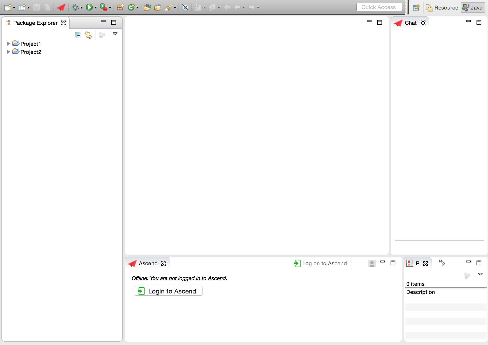

If you don't see Ascend, then you need to configure JRE 1.8 in Eclipse.
For guidance, see the section on this topic
at the bottom of this page.
If the Ascend icons are still not visible after configuring JRE 1.8,
then you need to delete any previous versions of Java (other than Java SE 8)
from the Installed JREs page and then try again.
These two views should now appear in your Eclipse IDE, similar to other
views like the Console and Package Explorer. The Chat view will allow you to
exchange chat messages with your partner, in a format similar to GChat. The
Ascend view will allow you to login to Ascend and choose a partner to
collaborate with. If you cannot find these two new views, you may need
to update your Java version to 1.8 (see this website's
"Prerequisites" page).
You can click and drag either of these views around the Eclipse IDE
to place them wherever you prefer. Below is a screenshot of one potential set up.

Login
To log into Ascend, click the prompt in the Ascend view. It
will open a pop-up window in which you will log in with an
existing Gmail account.
You can use your university email (if your university uses
Gmail) or a personal Gmail account. Add contact
Once you have logged into Ascend, you will see a list of all your contacts who are
currently also logged on and available to collaborate. If you would like to collaborate
with someone who is not already in your contact list, follow the instructions below.
In the Ascend view, click "Add Contact"
In the pop-up box, type in a name for this contact, and the contact's Gmail address.
Click "Add"
Note: Contacts will only appear in the list if they are currently logged in and available
to collaborate (i.e. not already in a session with another user).
Send an invitation to collaborate
Prerequisite: You must be logged in. When logged in, your contact
list will appear in the Ascend view. Note that the only contacts who
will appear in the list are those who are currently logged in and
not already in a collaborative session with someone else.
Locate your desired partner in the contact list and right click
on their name
Select "Start collaboration"
In the pop-up window, select a project from your current workspace to share Note: Only Java projects can be shared (not General projects)
Wait for your partner to accept the invitation (note: if it is a large project, it
may take up to a minute for all the files to transfer)
Accept an invitation to collaborate
If your partner sends you an invitation to collaborate, a pop-up window will notify you.
Chat
Prerequisite: You must be logged in. When logged in, your contact
list will appear in the Ascend view.
Locate your desired partner in the contact list and right click
on their name
Select "Send instant message"
Your message (and any replies from your partner) will appear in the Chat view
Pair Programming in Ascend
When you begin a collaboration with another user, you will start out as either the
Driver or the Navigator.
If you are the Driver, you can modify your project's code and file structure as you
normally would if programming alone. Your partner will see these changes in real time.
If you are the Navigator, you cannot modify the code or file structure, but you have the
freedom the view anywhere in the given project while your partner updates the code. You
will be able to see any modification that your partner makes in real time.
Switch Roles
At any point during a collaboration, either partner can click the "Switch Roles" button
in the Ascend view to switch who is Driver and who is Navigator. A pop-up window will
appear to notify the other partner.
Leave / Close the pair progrogramming session
You can end the collaborative session at any time in the Ascend view. There is also a button
in the Ascend view to Log off from Ascend. If either partner logs off, the collaborative
session automatically ends.
Configure JRE 1.8 in Eclipse
In Eclipse, go to the Preferences menu
Go to Java, and then Installed JREs
Select Java SE8 and click "OK"
If Java SE 8 is not visible, then click on Search and find the location
of it and then select it.
Report Bugs
When a bug occur, please fill out this form to inform the developers, so that it could be fixed. Thank you very much! Please contact ascend.bug.reporting@gmail.com for any more questions.